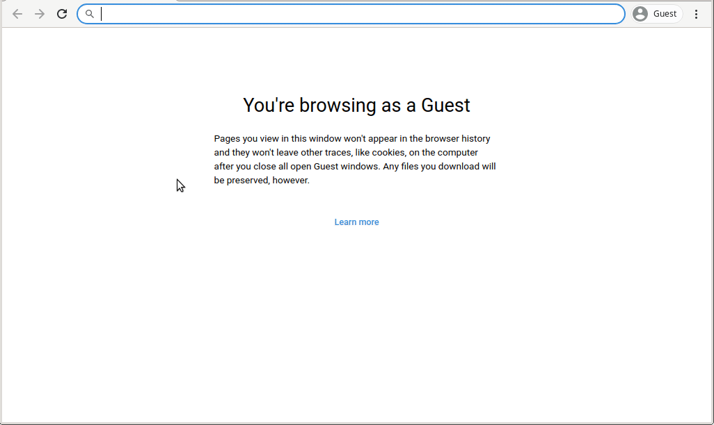

Scikit-Map is a library to fill gaps in the Python machine learning ecosystem when dealing with geospatial data. It offers parallel data access and manipulation for space-time overlays and large-scale predictions.

It implements efficient raster access through rasterio, multiple gapfiling approaches, spatial and spacetime overlay, training samples preparation (LUCAS points), and Ensemble Machine Learning applied to spatial predictions (fully compatible with scikit-learn).
Installation#
Docker#
The best way to install skmap is using Docker. Check the official documentation to get Docker running in your environment.
JupyterLab Container#
The image opengeohub/pygeo-ide provides access to all skmap dependencies and to JupyterLab IDE. The follow instructions are specific for Intel CPUs, which supports MKL, for other CPUs it’s recommend to use the openblas version.
First, download the image:
docker pull opengeohub/pygeo-ide:v3.8.6-mkl-gdal314
Then create the container:
docker run -d --restart=always --name opengeohub_pygeo_ide -v /mnt:/mnt -p 8888:8888 -e GRANT_SUDO=yes --user root opengeohub/pygeo-ide:v3.8.6-mkl-gdal314 start.sh jupyter lab --LabApp.token='opengeohub' --ServerApp.root_dir='/'
As last step access the JupyterLab through http://localhost:8888 using the password opengeohub, open a terminal and install the last version of scikit-map:
pip install -e 'git+https://gitlab.com/geoharmonizer_inea/eumap.git#egg=eumap[full]'

Conda#
To install skmap using conda, first it’s necessary download the file conda_env.yml:
curl https://gitlab.com/geoharmonizer_inea/eumap/-/raw/master/conda_env.yml > ./conda_env.yml
Then use this file to create new a environment and activate it:
# It will take a while
conda env create --quiet --name skmap --file conda_env.yml
conda activate skmap
As last step install the skmap:
pip install -e 'git+https://gitlab.com/geoharmonizer_inea/eumap.git#egg=eumap[full]'
Contributing#
The scikit-map library has been developed and used by a group of active community members. Your help is very valuable to make the package better for everyone. Check our contribution guidelines and open issues
License#
© Contributors, 2020. Licensed under an MIT license.
Funding#
This work is co-financed under Grant Agreement Connecting Europe Facility (CEF) Telecom project 2018-EU-IA-0095 by the European Union.